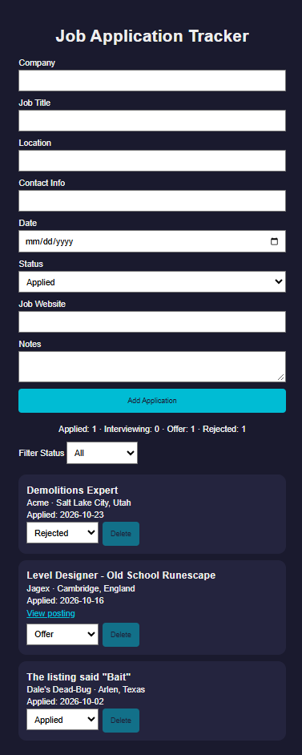
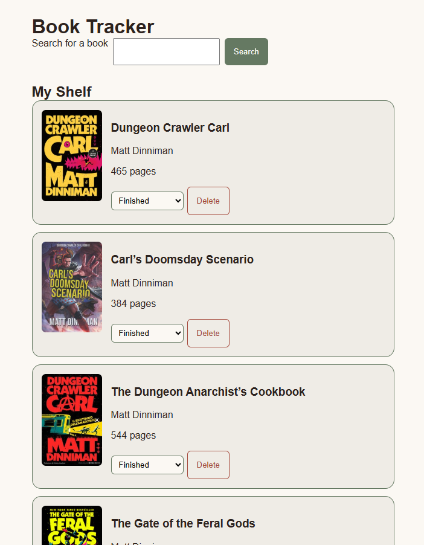

Job Application Tracker
A web app for tracking job applications, with status updates, filtering, and a live summary of where each application stands.
- HTML
- CSS
- JavaScript
- localStorage
Hi! I'm Joe. I'm a web developer who builds practical tools with HTML, CSS, and JavaScript.
I studied software and web development at Southwestern Community College, took some time away from programming, and now I'm back to writing code. I'm an avid fantasy reader, with favorites like The Wheel of Time and Dungeon Crawler Carl, which inspired me to build a reading tracker for both print books and audiobooks. When I'm not coding, I'm usually reading, listening to an audiobook, or playing video games.

A web app for tracking job applications, with status updates, filtering, and a live summary of where each application stands.

A reading tracker that searches Open Library's catalog, saves books to a personal shelf, and tracks reading progress by page or by audiobook listening time.
I'm currently looking for web development roles. Feel free to reach out!